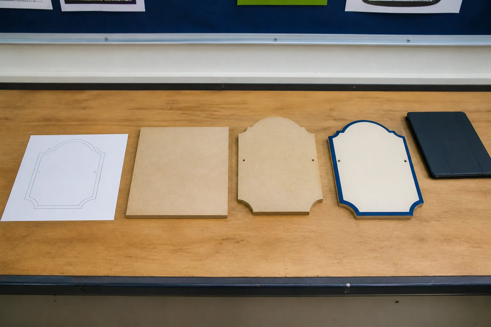
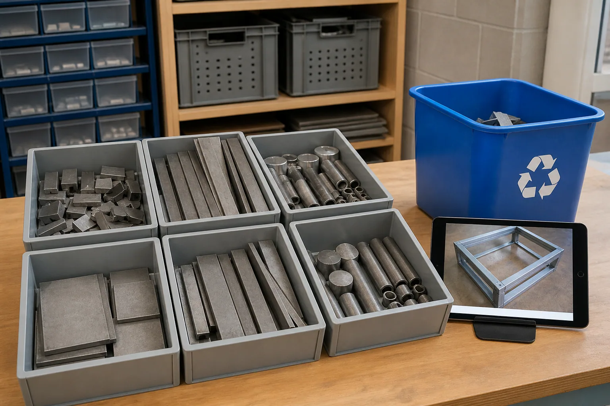

Module 4 PowerPoint
Editable classroom presentation covering all three named learning sections.
Section 1
Production sequence and authorisation
Explain why production is organised as a dependency-based sequence with explicit teacher-controlled hold points rather than a list of machine instructions.
A production sequence is built from dependencies
A production sequence puts tasks and checks in a sensible order. The order is not arbitrary: some actions depend on information or results from earlier stages. A design must be reviewed before material is committed. A produced part must be checked before later finishing hides or adds to its surface. A mounting decision may affect the design before production begins. Thinking in dependencies helps prevent rework and makes responsibilities clearer.
At a course level, the Drive guide moves from reviewed design and file preparation to authorised production, edge and surface quality, finishing, final testing and evaluation. That is a learning sequence, not a local operating procedure. The teacher will replace broad stages with the exact approved instructions for the chosen Swinging Sign, LED tea-light holder or pot-plant-holder pathway. Students should be able to explain why one stage comes before another without inventing how equipment is used.
Roles and authorisation control who decides and acts
In a workshop, different people may design, review, prepare, operate, observe, inspect or record. A role describes an assigned responsibility; authorisation confirms who is permitted to make a decision or perform an action. Skill, confidence or seeing someone else work does not create authority. The local teacher decides the student and teacher operating model for every tool, machine and process.
A simple responsibility map can use three labels: student prepares or records; teacher checks or authorises; authorised person performs the practical action. The exact map varies by task and school rules. If responsibility is unclear, stop at the hold point and ask. This is not wasted time. It protects people, material and equipment, and it prevents a student from carrying responsibility that belongs to an authorised adult.
Hold points make quality control visible
A hold point is a deliberate pause where evidence is checked before work continues. Useful hold points occur before irreversible or difficult-to-correct decisions, and whenever the actual result may differ from the plan. A hold-point record can state what was checked, the evidence used, the person responsible for the decision and the outcome: proceed, revise or stop.
If a design or result changes after approval, change control matters. Record what changed, why it changed and whether the earlier approval still applies. A small change on screen can affect later production or mounting, so students must not decide that a change is ‘too minor to mention’. The aim is not paperwork for its own sake. It is a shared, accurate understanding of the current plan and the next authorised action.
Monitoring compares the actual result with the plan
Monitoring means checking progress against the approved criteria and sequence. It can include observing appearance, comparing confirmed measurements, checking that required features are present and recording an unexpected result. Monitoring is different from waiting until the end to decide whether the product is acceptable. Early evidence supports timely decisions.
When something differs from the plan, use neutral language: describe what you can observe, identify the criterion affected and refer the decision to the right person. For example, ‘The produced edge does not match the approved quality example’ is more useful than ‘I wrecked it’. The response may be to accept, revise, remake or change the plan, but that choice belongs within the teacher-approved process. Honest evidence is a production skill, not an admission of failure.
Key vocabulary
- sequence
- An ordered set of connected stages or actions.
- dependency
- A relationship in which one stage relies on another being completed first.
- authorisation
- Explicit permission for a person to make a decision or perform an action.
- hold point
- A planned pause for evidence, checking and a proceed, revise or stop decision.
- change control
- Recording and reviewing changes so the current approved plan remains clear.
- monitoring
- Comparing progress or results with the approved plan and criteria.
Once a project has been approved, students may continue through every practical stage without further checks.
Approval applies to a defined state and next action. Production includes later hold points, and any change or unexpected result may require a fresh decision.
Takeaway: Understand dependencies, follow assigned roles, pause at hold points and record differences honestly so each next action is explicitly authorised.
Local workshop boundary: This section explains planning and decision control. It does not teach machine operation. Follow only the sequence, roles, safety controls and practical instructions issued by your teacher.

Video or no-stream pathway
No-stream learning pathway
Sequence-and-authority card sort
Builds the same understanding of sequence, dependencies, roles and hold points without showing operational footage.
- Order broad cards for review, authorisation, production, inspection, finishing, testing and evaluation.
- Add a dependency statement between each pair: ‘This must come first because…’.
- Assign each decision to student, teacher or authorised person using the local scenario supplied by the teacher.
Evidence prompt: Record the decision or explanation named in the final step.
Streaming is optional. The pathway above covers the section learning on its own. Open this record in the media library.
Check your understanding: production sequence and authorisation · 10 questions + one response
Formative learning evidence
Answer all ten questions, use the feedback to revisit exact help, then complete the scaffolded response. Work saves only in this browser.
Higher-order response
Explain and justify a controlled production sequence for a fictional classroom project using broad stages only. Show where authorisation, monitoring and change control protect quality and safety.
Use these prompts
- Which broad stages depend on earlier information or results, and why?
- Where should hold points occur, and who has responsibility for each decision?
- How should an unexpected result or design change be recorded and referred?
Success criteria
- Explains a logical dependency-based order with at least two meaningful hold points.
- Separates student evidence responsibilities from teacher or authorised-person decisions without inventing a practical procedure.
Nothing saved yet.
Section 2
Edges, finishing and quality
Develop criteria-based judgement of edge and surface condition while keeping all practical improvement methods under local teacher control.
Quality means meeting agreed criteria
Quality is the degree to which a result meets its agreed criteria. It is not simply ‘looks good’ or ‘I finished’. For a sign, criteria might address readable form, correct orientation, confirmed size, consistent features, suitable edge condition and an appearance that supports the design intent. The exact criteria for this course project must come from the teacher-approved brief and plan.
A quality criterion should be observable or checkable. ‘Neat’ is hard to judge unless the class has an approved example or description. ‘Required features are present and match the reviewed drawing’ is clearer. Criteria also need priorities. A decorative preference cannot override a safety concern. When students use shared criteria, peer and teacher feedback becomes more consistent and less personal.
Edge condition is both a quality and safety signal
A cut or formed edge may not immediately match the intended final condition. It may show unwanted projections, roughness, variation or marks. A burr is a small unwanted projection left at an edge. The Drive source asks students to explain deburring or smoothing, but it does not supply an approved school procedure. This site therefore teaches how to recognise and report an edge-quality issue, not how to remove it.
Treat an uncertain edge as a stop-and-refer signal. Keep hands away, protect the work area as directed and tell the teacher what you observed. The teacher will decide the safe inspection and improvement method. Describing location and effect is useful: ‘The edge at the lower curve differs from the approved sample and may affect safe handling’ communicates more than ‘It is bad’.
Inspection uses evidence, not assumptions
Inspection compares the actual result with the drawing, approved example and quality criteria. Evidence may include a teacher-approved visual check, confirmed measurement, labelled photograph or criteria checklist. Different evidence answers different questions. A photograph can record appearance but may not prove a dimension or reveal every edge condition. A measurement can compare size but does not explain why a mark occurred.
A useful inspection note follows four parts: observed condition, location, affected criterion and next decision required. Use neutral language and record what is visible rather than naming a cause without evidence. If the result is within the approved standard, record that. If it differs, pause and refer it. The decision may involve accepting the variation, applying an approved correction, revising a later stage or remaking a component.
Finishing decisions respond to purpose and evidence
‘Finishing’ can describe work that brings a surface or edge to the approved condition and prepares the product for later use or coating. It is not one universal technique. The appropriate method depends on material, geometry, current condition, intended finish, equipment and local controls. Students must not transfer a method from a different material or online video into the workshop.
Before any practical improvement, the decision maker needs to know the problem, the target condition and the approved method. Afterward, the result is inspected again against the same criterion. This creates a feedback loop: inspect, decide, authorised action, re-inspect. Recording the loop shows how quality was controlled, even when the first result needed improvement.
Key vocabulary
- quality criterion
- An agreed feature or standard used to judge a result.
- burr
- A small unwanted projection at an edge.
- inspection
- A planned comparison of an actual result with criteria or an approved reference.
- defect
- A condition that does not meet a required quality criterion.
- feedback loop
- A repeated cycle of checking, deciding, acting with authority and checking again.
If an edge looks acceptable in a photograph, it is safe to handle and ready to finish.
A photograph cannot confirm every edge condition. Follow the teacher-approved inspection and handling process before any contact or finishing decision.
Takeaway: Judge quality against approved criteria, report edge conditions neutrally and use an inspect–decide–authorise–reinspect loop rather than improvising a finishing method.
Local workshop boundary: Do not touch, test or improve an edge unless your teacher has directed you to do so. Your teacher will demonstrate the approved inspection method, tools, PPE, supervision and finishing process.
Video or no-stream pathway
No-stream learning pathway
Quality-inspection case file
Provides the same criteria comparison and inspection reasoning while deliberately excluding operational edge-finishing footage.
- Compare three protected sample images with an approved quality description.
- Write one neutral observation for each using condition, location and affected criterion.
- Choose the correct decision state — record as meeting the reference or pause for teacher review — without proposing a practical method.
Evidence prompt: Record the decision or explanation named in the final step.
Streaming is optional. The pathway above covers the section learning on its own. Open this record in the media library.
Check your understanding: edges, finishing and quality · 10 questions + one response
Formative learning evidence
Answer all ten questions, use the feedback to revisit exact help, then complete the scaffolded response. Work saves only in this browser.
Higher-order response
Evaluate a fictional edge-quality case using an approved reference image and criteria list. Explain the evidence, the decision state and how the quality feedback loop should continue.
Use these prompts
- What condition is observable, where is it located and which criterion may be affected?
- What can the available photograph or measurement prove, and what can it not prove?
- Should the case be recorded as meeting the reference or paused for teacher decision, and what re-inspection would later be needed?
Success criteria
- Uses neutral evidence and an approved criterion to make a defensible judgement.
- Keeps practical correction methods under teacher control and explains the full feedback loop.
Nothing saved yet.
Section 3
Nesting, offcuts and process evidence
Connect material-efficiency decisions with responsible offcut handling, traceable evidence and improvement of future production planning.
Nesting is judged after production as well as before it
Before production, nesting is a prediction about how efficiently shapes may fit within approved stock and process limits. After production, students can compare that prediction with the actual pattern of used material and remaining offcuts. The comparison turns a planning idea into evidence. It may show that the layout worked well, that a useful area remained, or that an unexpected issue changed material use.
The strongest reflection does not claim that every gap could have been eliminated. Approved spacing, edges, orientation and production requirements control what is possible. Instead, compare planned and actual outcomes using the same categories: required parts, unused area, useful connected offcuts, and any material consumed through rework. Ask whether a future layout could improve without breaking another criterion.
An offcut can retain value
An offcut is material left after parts are produced. Its future value depends on size, shape, condition, identity and the school's storage or recycling system. A large connected piece may be suitable for a future approved task; a small or uncertain piece may not be. Students should not make that decision by handling material or placing it into a container on their own.
A responsible hierarchy begins by reducing avoidable material use through sound planning. Next, identify possible reuse within the teacher's system. Finally, separate material for the approved recycling or disposal pathway. Records can support this process by identifying material type when known, approximate remaining form, condition and the teacher's decision. This keeps useful stock visible and prevents unsafe or mixed material from being treated casually.
Process evidence tells the story of decisions
Process evidence connects the plan, action, result and response. Useful examples include a dated layout image, an approval state, a photograph of the produced arrangement, a quality note and an offcut decision. Each piece should have a purpose and a caption. Ten nearly identical photographs are less informative than three images that show clear change or a decision point.
Evidence also needs privacy and context. Photograph the product or material only when authorised, avoid people and names unless required and approved, and do not capture machine controls or sensitive information. State whether an image shows a plan, a result or a learning model. A caption such as ‘Actual layout after authorised production; connected offcut referred to teacher’ is clearer than ‘Week 4 photo’.
Evidence supports process improvement
Process improvement asks how a future project could achieve the same or better result with less avoidable material, time or rework. Start with a specific difference between plan and result. Suggest one change, explain the expected benefit and identify a possible trade-off or check. This turns reflection into a testable proposal.
For example, a student might notice that the paper planning model left a fragmented blank area while another permitted orientation left one connected area. The proposed improvement would be to test the second arrangement in the next planning stage, subject to approved spacing and orientation. The benefit is a more useful offcut; the check is whether all process and design criteria remain satisfied. This is stronger than saying ‘waste less’ because it explains how the idea would be evaluated.
Key vocabulary
- material yield
- The useful output gained from a quantity or area of material.
- offcut
- Material remaining after required parts are produced.
- reuse
- Using an item or material again for a suitable approved purpose.
- process evidence
- Records that show what was planned, decided, produced and improved.
- process improvement
- A reasoned change intended to improve a future result or reduce avoidable resources.
Every leftover piece is either rubbish or automatically safe to reuse.
Offcut value and safe handling depend on confirmed identity, form, condition and the teacher's local system. Students record and refer rather than assume.
Takeaway: Compare planned and actual material use, route offcuts through the teacher's system, capture purposeful evidence and propose one checkable improvement.
Local workshop boundary: Follow your teacher's system for identifying, handling, storing or recycling any material. Do not pick up an offcut or assume it is safe or reusable from its appearance.

Video or no-stream pathway
No-stream learning pathway
Plan-to-result evidence comparison
Covers nesting reflection, offcut value, privacy-safe evidence and process improvement without operational footage.
- Compare the fictional planned layout and actual paper result using required parts, unused area and connected offcut categories.
- Select the three evidence images that best show the decision story and write purposeful captions.
- Propose one future layout test, its expected benefit and the criterion that must still be checked.
Evidence prompt: Record the decision or explanation named in the final step.
Streaming is optional. The pathway above covers the section learning on its own. Open this record in the media library.
Check your understanding: nesting, offcuts and process evidence · 10 questions + one response
Formative learning evidence
Answer all ten questions, use the feedback to revisit exact help, then complete the scaffolded response. Work saves only in this browser.
Higher-order response
Evaluate a fictional plan-to-result evidence set for material efficiency. Explain what happened to the material, judge the quality of the evidence and propose one controlled improvement for a future layout.
Use these prompts
- How did the actual required parts, gaps, offcuts and rework compare with the plan?
- Which records clearly support that judgement, and what evidence is missing or poorly captioned?
- What specific future change do you propose, what benefit do you expect and which approved criteria must be rechecked?
Success criteria
- Uses several pieces of evidence to compare planned and actual material use without assuming every gap was avoidable.
- Proposes one testable improvement with a benefit, trade-off or check and respects teacher-controlled offcut handling.
Nothing saved yet.
Module review
Find every learning package
The drawers stay closed until you choose them. Use this checklist to revisit all three directly.
- ○Production sequence and authorisation
- ○Edges, finishing and quality
- ○Nesting, offcuts and process evidence